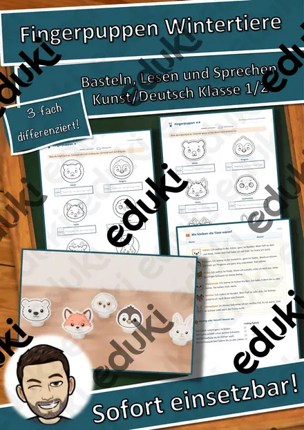
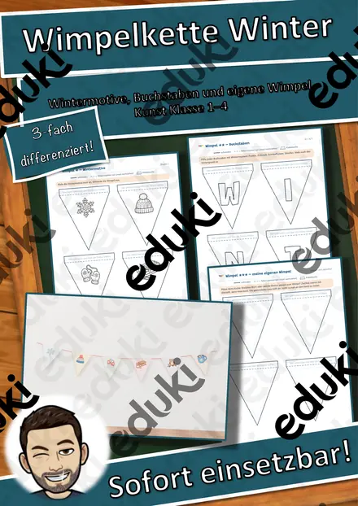
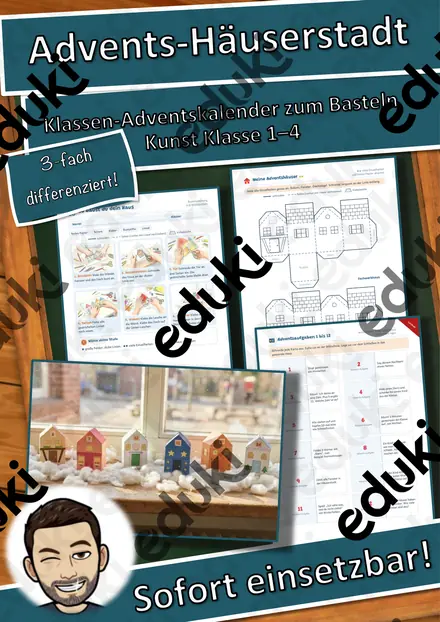
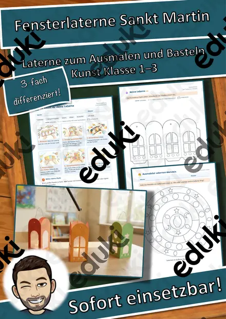
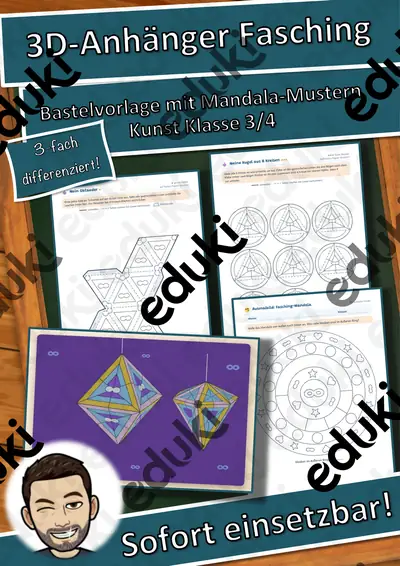
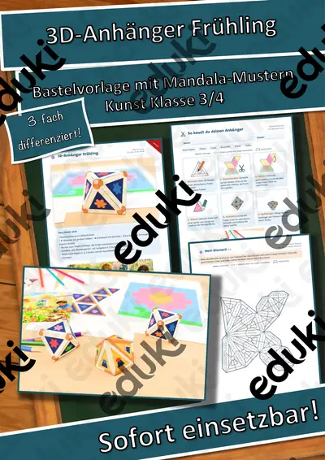
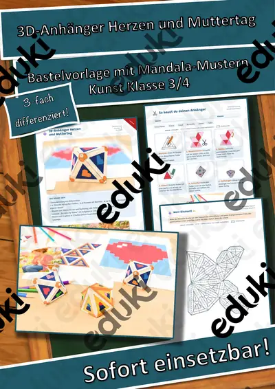
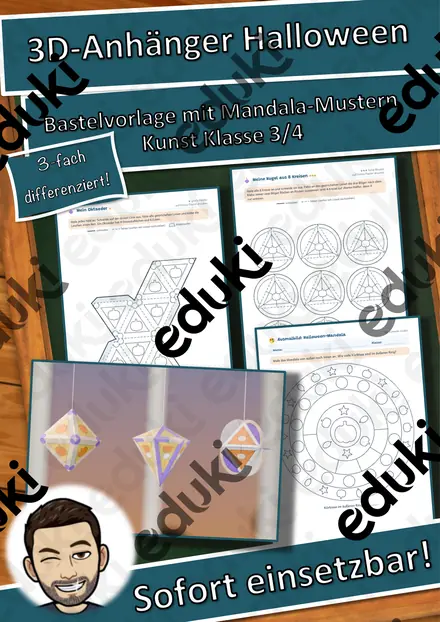

Igel im Laubnest – Klappnest basteln mit Sachtext Winterschlaf, 3-fach differenziert (Tiere im Herbst, Klasse 1/2)

Der Kürbis von innen – Klapp-Kürbis basteln und beschriften, 3-fach differenziert (Halloween/Herbst, Klasse 1/2)

Halloween-Ziehkarten – Präpositionen sichtbar machen: über, vor, neben, auf, 3-fach differenziert (Klasse 1/2, DaZ)

Halloween-Hüpffiguren – 6 Bastelvorlagen mit Federkugel, Steckbrief und Geschichte, 3-fach differenziert (Klasse 1/2)

Halloween-Handpuppen – Bastelvorlage mit Sachtext und Puppentheater, 3-fach differenziert (Klasse 1/2)

Fingerpuppen Wintertiere – Bastelvorlage mit Sachtext und Sprechaufgaben, 3-fach differenziert (Klasse 1/2)

Wimpelkette Winter – Bastelvorlage mit Wintermotiven, Buchstaben WINTER und eigenen Wimpeln, 3-fach differenziert (Klasse 1–4)

Advents-Häuserstadt – Klassen-Adventskalender zum Basteln mit 24 Adventsaufgaben, 3-fach differenziert (Klasse 1–4)

Fensterlaterne Sankt Martin – Laterne basteln mit Lesetext zur Legende, 3-fach differenziert (Klasse 1–3)

Gespensterhaus aus meiner Hand – Halloween-Bastelvorlage mit Lesen und Schreiben, 3-fach differenziert (Klasse 1/2)

St.-Martins-Laterne aus einem Blatt – falten, einschneiden, rollen, mit Martinsgeschichte, 3-fach differenziert (Klasse 2/3)

Herbst-Klappkarte Eichhörnchen – Figurenkarte basteln mit Sachtext, 3-fach differenziert (Tiere im Herbst, Klasse 2/3)

Flatter-Fledermaus am Stab – bewegliche Bastelfigur mit Sachtext, 3-fach differenziert (Halloween/Herbst, Klasse 2/3)

Spinnen-Rätsel-Faltkarte – Halloween-Rätsel lesen und schreiben, Pop-up-Spinne, 3-fach differenziert (Klasse 2/3)

Mein Grusel-Meter – Halloween-Drehkarte basteln, Adjektive steigern und vergleichen, 3-fach differenziert (Klasse 2/3)

Halloween-Armbanduhr aus Papier – Uhrzeit lernen mit Bastelvorlage, 3-fach differenziert (Klasse 2/3)

Papier-Schneeflocken falten und schneiden – Winter-Bastelvorlage mit Sachtext, 3-fach differenziert (Klasse 2/3)

Spiral-Gespenster zum Aufhängen – Halloween-Bastelvorlage mit Lesetext, 3-fach differenziert (Klasse 2/3)

3D-Anhänger Fasching – Oktaeder, Diamant und Kugel zum Ausmalen und Basteln, 3-fach differenziert (Klasse 3/4)

3D-Anhänger Frühling – Oktaeder, Diamant und Kugel zum Ausmalen und Basteln, 3-fach differenziert (Klasse 3/4)

3D-Anhänger Herzen und Muttertag – Oktaeder, Diamant und Kugel zum Ausmalen und Basteln, 3-fach differenziert (Klasse 3/4)

3D-Anhänger Herbst – Oktaeder, Diamant und Kugel zum Ausmalen und Basteln, 3-fach differenziert (Klasse 3/4)

3D-Anhänger Winter – Oktaeder, Diamant und Kugel zum Ausmalen und Basteln, 3-fach differenziert (Klasse 3/4)

3D-Anhänger Advent – Oktaeder, Diamant und Kugel zum Ausmalen und Basteln, 3-fach differenziert (Klasse 3/4)

Halloween Wackel-Skelett – Bastelvorlage, Sachtext Skelett und Knochen beschriften, 3-fach differenziert (Klasse 3/4)

3D-Zauberbild Lebensraum Wald – Umkehrperspektive basteln, Sachtext und Forscherauftrag, 3-fach differenziert (Klasse 3/4)

Klapp-Spukhaus zu Halloween – Bastelvorlage mit Schreibanlass und Wortspeicher, 3-fach differenziert (Klasse 3/4)

Halloween-Kegelfiguren – Körper Kegel basteln und erforschen, 3-fach differenziert (Mathematik/Kunst Klasse 3/4)

Pop-up-Karten Weihnachten – Bastelvorlage mit Stufen-Pop-up, Motiven und Weihnachtsgruß, 3-fach differenziert (Klasse 3/4)

3D-Anhänger Halloween – Oktaeder, Diamant und Kugel zum Ausmalen und Basteln, 3-fach differenziert (Klasse 3/4)
Für diese Auswahl gibt es noch kein Material.
Was steckt in einer Bastelvorlage?
Jede Bastelvorlage verbindet ein Modell mit einem Lerninhalt. Der Kürbis wird zum Klapp-Kürbis, an dem die Kinder die Teile beschriften, das Skelett wird beweglich und zeigt die wichtigsten Knochen, die Armbanduhr aus Papier übt das Ablesen der Uhrzeit. Das Basteln ist der Anlass, der Sachtext und die Aufgaben sichern das Wissen.
Welche Fächer eine Vorlage abdeckt, steht im Titel: Viele gehören zu Deutsch, Kunst oder Sachunterricht, einige zu Mathematik.
Was in der Regel enthalten ist
- Hinweise für Lehrkräfte mit Ablauf, Kopierplan, Lösungen und Lehrplanbezug
- Überblick mit Musterfoto des fertigen Modells
- Bauanleitung mit Skizze
- Bastelbogen in Farbe und zum Ausmalen
- Sachtext und Übungsblätter in den Stufen ★, ★★ und ★★★
Den genauen Umfang nennt die Beschreibung des jeweiligen Materials auf eduki.
So setzt du eine Bastelvorlage ein
Zum Einstieg zeigst du das fertige Modell oder das Musterfoto. Danach basteln die Kinder nach der Bauanleitung. Wer fertig ist, liest den Sachtext und bearbeitet die Aufgaben in seiner Stufe. Am Ende werden die Modelle ausgestellt, und die Kinder erklären, was sie über das Thema gelernt haben.
Häufige Fragen
Für welche Klassen sind die Bastelvorlagen gedacht?
Für die Grundschule. Jede Bastelvorlage nennt im Titel die Klassen, für die sie gedacht ist, meist zwei benachbarte Jahrgangsstufen.
Welches Material brauche ich?
Meist reichen Drucker, Papier, Schere, Kleber und Stifte. Was ein Modell zusätzlich braucht, steht in den Hinweisen für Lehrkräfte.
Wie funktioniert die Differenzierung?
Es gibt genau drei Stufen: ★, ★★ und ★★★. Alle Kinder basteln dasselbe Modell, die Aufgaben zum Sachtext sind unterschiedlich anspruchsvoll.
Sind Lösungen enthalten?
Ja, die Lösungen zu den Aufgaben stehen in den Hinweisen für Lehrkräfte.